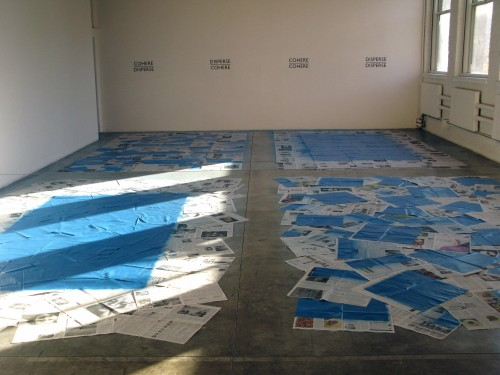
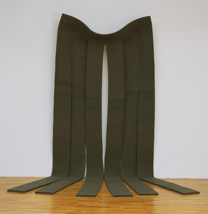
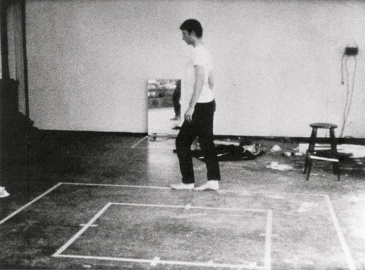
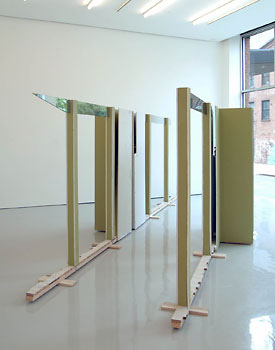

-
Fall at PS 1
by Stephen Squibb October 26, 2009
Contemporary is a loaded word. As an adjective, it implies very different things in different contexts. In fashion and design, it tends to signify down market availability, as in the phrase ‘contemporary casual;’ while the same lexicon prefers to misuse the term ‘modern’ as its go-to signifier for the new and exclusive. In the artworld, however, ‘modern’ usually remains a specific, historical movement with a clearly defined beginning and end. Though in popular discourse ‘modern art’ remains a source of some consternation, typically indicating a general confusion, intimidation or outright rejection of the perceived pretention of abstract work. ‘Postmodern,’ perhaps the likeliest term to be placed between the modern and the contemporary, has shown itself to be even more historically rooted than its predecessor, a fleeting fashion that has all but disappeared from the discussion. ‘Contemporary,’ however, remains a pure descriptor, offering nothing so much as a designation of what is presently taking place.
With this in mind, it’s possible to read MOMA’s taking of PS 1 in 2000 as an effort by the Modern to preserve something of its contemporary legacy. Feeling, perhaps, its own slow descent into legend and out of immediate relevance – the becoming Metropolitan of the Modern, if you will – it took a step intended to shore up its position on the cutting edge. Here the ‘Modern’ of the movement becomes again the a-historical ‘modern’ of the well-designed chair, modern as the new and the interesting, modern as, in short, the contemporary. In theory we could see this as having made sense: the MOMA proper continues to stand as the almighty temple to that most influential of movements, while PS 1 develops new talent and keeps mommy in the conversation with the Whitney, the Guggenheim, and the New Museum. Indeed, it was a marriage that could have provided a practical rubric for distinguishing between the two terms.


As it happens, things now seem more confused than ever. Yesterday, as part of its fall program, P.S. 1 opened 1969, a group show, of sorts, displaying works made or acquired by MOMA in 1969. Even ignoring the fatigue greeting yet another nostalgia trip to that most overexposed of decades, the show begs some serious questions. On the one hand, work made in 1969 is definitely not Modern, in the historical sense of the term, but nor is it contemporary, far from it. What it is, and, to their credit the curators of 1969 seem to have understood this, is history. So, in 1969, archives lay side by side with artworks as notes, sketches and drawings are lovingly arranged beneath thick glass, and a timeline adorns the hallway outside the exhibition rooms. Make no mistake, it’s a compelling show, offering the strange pleasure proper to arbitrary curatorial conceits; variety linked by an abstract proximity. So it is that in one section you have a Robert Smithson coral spill next to a Bruce Nauman video across the hall from a Martha Rosler collage. These strange juxtapositions to have a way of sedimenting into a specific and palpable energy, and if the goal was to present in outline the feeling of the moment in question, 1969 certainly succeeds.Still, the most striking piece in the show is one of the five ‘interventions’ (another term that should perhaps be considering retirement) by actual contemporary artists allowed to respond to their elders. A recreation of one of Robert Morris’ works, an untitled moving blanket, Stephanie Syjuco’s Morris Mover was actually used to move objects from MOMA to the exhibition in Queens. Though perhaps intended as homage, Morris Mover underscores beautifully the awkwardness of utilizing a museum ‘solely devoted to contemporary art’ to clean out MOMA’s closet. Syjuco’s wicked highlighting of the reduction of contemporary art to secondary status in it own building undoes PS 1’s ostensible pride at not indulging in the sort of collection it is now reduced to showcasing, however effectively.
1969, by dint of its aforementioned, almost emotional, coherence, does provide for the most successful aspect of all the fall programming taken together, namely the contrast with Between Spaces, the first floor presentation of emerging contemporary sculpture. Professional to the point of self-consciousness, Between Spaces is an almost surgical presentation of eleven sculptors working across a variety of media. Deploying a highly polished conceptual dexterity with a subtlety that borders on self-effacement, the show couldn’t be more different from the messy, arrogant and, it must be said, decidedly endearing ruckus perpetrated by the aging hippies on the second floor.
Heather Rowe, a standout at the last Whitney Biennial, continues to shine here, offering a structure that reveals its references gently and with repeated encounters, stretching out its own cleverness to the point where it acquires a real depth. Zak Kitnick, flirting with the obtuse, creates a complex intersection of interior design, commodity production, and class envy in what is easily the most critically ambitious work in the show. In a telling moment, a curator leading a press tour arrived at Kitnick’s work and began to discuss Adorno before stopping herself, embarrassed. We were about fifty feet and a million years from the angry recordings of the Art Workers Coalition playing on loop above our heads.
That contrast gives the emerging solipsism on display in these works an easy legibility; no one seems that concerned with the outside world, preferring instead to mess about with deeply personal configurations. It’s a credit to the artists and the curators that this comes across as a real strength of the work and not a liability – though it will likely have an adverse effect on its being remounted for posterity, forty years down the road.

{kind=link}
{kind=link}
{kind=link}
{kind=link}
1 Comment
shout-out in idiom mag « The Autonomous Manufacturing Zone
[...] November 19, 2009 A nice little mention of my P.S.1 “Morris Mover” work in an online journal, Idiom Mag: [...]